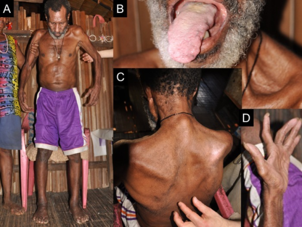

Página 3 · Comparação
ELA: a neurodegenerativa dos dois neurônios
1º grita piramidal · 2º cospe fasciculação e atrofia — e a doença pega os dois. Esse é o molde da esclerose lateral amiotrófica.
Nome e natureza
A doença capaz de pegar um paciente idoso e atacar especificamente o 1º e o 2º neurônio motor (e mais nada) é a esclerose lateral amiotrófica (ELA).
ELA é doença neurodegenerativa do primeiro e do segundo neurônio motor.
Idoso e assimetria
Perfil epidemiológico clássico de boa doença neurodegenerativa: idoso. Como boa doença neurodegenerativa, a ELA tende a ser assimétrica.
Clínica nuclear
Fraqueza — progressiva, misturando clínica de 1º e de 2º, de forma mais ou menos assimétrica.
Clínica do 1º: Babinski, espasticidade, hiperreflexia.
Clínica do 2º que mais chama atenção: fasciculações, cãibras (mesmo contexto de perda de inervação / desnervação) e atrofia pronunciada. As cãibras entram no mesmo saco da desnervação: se se perde a inervação do músculo, também pode haver cãibras.
ELA
Neurodegenerativa do 1º e do 2º NMS · idoso · assimétrica · fraqueza progressiva.

From Okumiya K et al., BMJ Open 2014 (case ALS 12), via Wikimedia Commons · CC BY 3.0 · fonte · artigo

O 2º que se vê
A atrofia (de membro, tronco e língua) é a face do 2º neurônio — a peça que o olho reconhece na clínica. Mas a foto é do mesmo corpo que tem Babinski: o 1º não aparece na imagem, aparece no exame. ELA é a doença que precisa dos dois para ser nomeada.
Dois andares atingidos — trato (1º) e corno anterior (2º) com X em ambos. Diagrama simples, sem o mapa denso completo.
Mapa denso 1º + 2º na ELA
Córtex → trato (1º) e corno anterior (2º) no mesmo esquema; chips clínicos Babinski/espasticidade/hiperreflexia de um lado, fasciculação/atrofia/cãibra do outro. Ambos morrem — esse é o retrato que sela a identidade da ELA.
Quiz — fixação
-
A ELA, no recorte desta plataforma, é melhor definida como:
Gabarito B. A identidade da ELA é a mistura dos dois neurônios — e mais nada.
(A) é território GBS. (C)/(D) perdem metade (ou todo) o alvo. Cai em A porque ambas “pegam motor”; o sítio (neurônio vs nervo) é o discriminador (volta em P6).
-
Qual perfil combina com a ELA clássica?
Gabarito B. Idoso + assimetria + mistura 1º/2º = molde da neurodegenerativa motora.
(A) invertido. (C) cheira GBS. (D) cheira placa/MG. Cai em C porque “fraqueza + progressão” sem o filtro etário/topográfico.